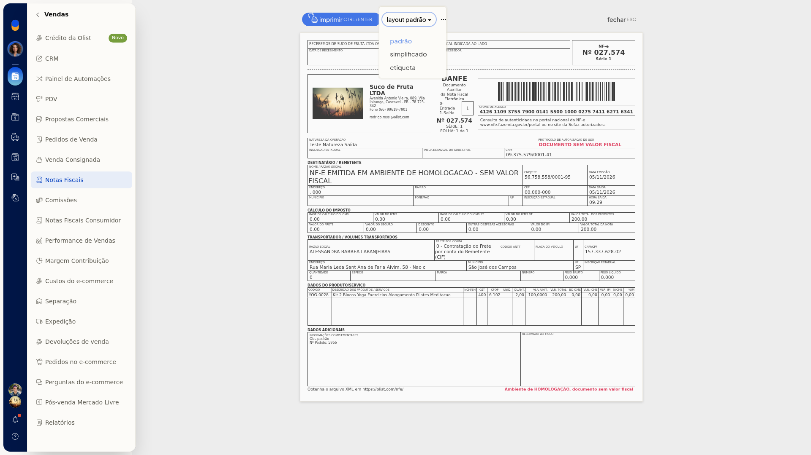
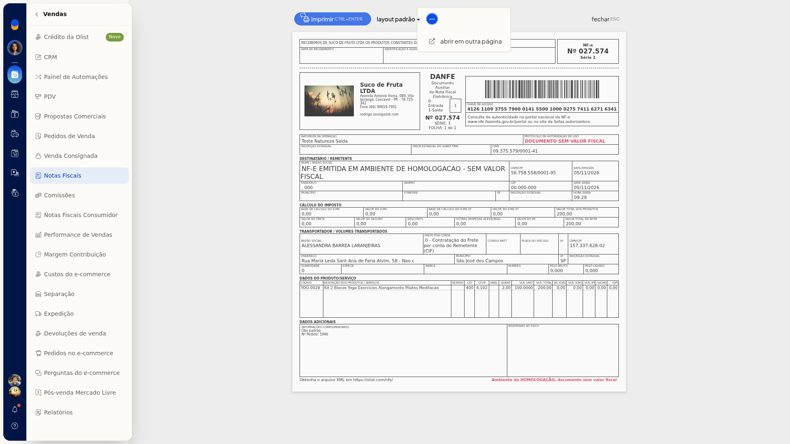

Imprimir DANFE
No ERP da Olist, você imprime a DANFE de uma nota em Vendas > Notas Fiscais, troca o layout e abre o documento em outra página. A impressão em lote avisa quando não há nota autorizada.
Importante
- A impressão em lote só segue quando existem DANFEs autorizadas. Sem nota autorizada, a tela mostra Não há notas autorizadas para imprimir DANFEs e nenhuma DANFE é impressa.
Instruções
Pela nota
-
Acesse Vendas > Notas Fiscais.

-
Na linha da nota, abra o menu de ações.

-
Clique em Imprimir DANFE.
-
No preview, selecione o layout Padrão, Simplificado ou etiqueta.


-
Para abrir a DANFE em outra página, clique em Mais ações e depois em Abrir em outra página.

-
Clique em Imprimir para imprimir a DANFE. Para sair sem imprimir, clique em Fechar.
Em lote
-
Acesse Vendas > Notas Fiscais.
-
Clique em Imprimir DANFEs.
-
Ou abra Mais ações e clique em Imprimir DANFEs autorizadas.

-
Se não houver nota autorizada, a tela mostra Não há notas autorizadas para imprimir DANFEs. Feche o aviso para permanecer na lista, sem imprimir DANFE.

Resultado
O preview da DANFE abre com Imprimir, o seletor de layout e Fechar. Na impressão em lote sem nota autorizada, você permanece na lista.
Informações adicionais
- O menu de ações da linha também oferece Salvar DANFE em PDF.